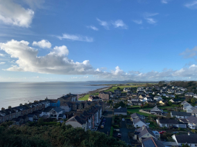
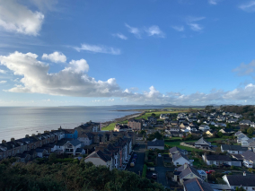
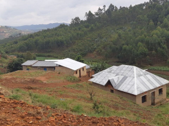
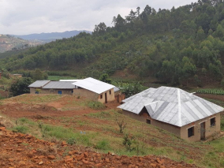

De patria a patria
Un viaje épico de Kentucky a Burundi pasando por Gales y Ucrania

Conoce un poco mejor los lugares de los que proceden tus colegas en línea
Todo ser humano es un artista, un ser de la libertad, llamado a participar en la transformación y reforma de las condiciones, el pensamiento y las estructuras que conforman e influyen en nuestras vidas. — Joseph Beuys
La ciudad de TripleTen ha reunido a profesionales de diferentes rincones del mundo. Hoy, la Galería de Arte TripleTen se enorgullece de presentar historias y fotografías de algunas de las personas que dedican su tiempo y esfuerzo a hacer que los futuros profesionales de la tecnología de esta ciudad se sientan como en casa. Cada uno de nosotros tiene una historia única sobre el lugar del que procede. No dudes en añadir a nuestra colección tu propia historia y una obra de arte visual dedicada a tu ciudad natal. No importa de dónde seas, nos alegra que seas nuestro vecino.
 



 

Cricieth, Gales

Berea es una pequeña ciudad ubicada en la parte central de Kentucky. La ciudad está rodeada por hermosos bosques y campos. Es conocida como la capital de la artesanía del estado, y sus visitantes hallarán infinitas posibilidades para ir de compras: tiendas de joyas, velas y artículos de madera artesanales; galerías, talleres de vidrio y más. La ciudad celebra un festival anual que rinde tributo al "spoonbread", un platillo local hecho de pan de maíz y que se sirve con una cuchara de madera.
Aunque, probablemente es mejor conocida por su universidad. El Berea College fue fundado en 1855 y fue la primera universidad sureña integrada racialmente, así como la primera en ser coeducacional. Algo que en cierta manera la hace única, es que no cobra colegiatura: cada estudiante recibe una beca del 100%.
Berea, Estados Unidos

Berea es una pequeña ciudad ubicada en la parte central de Kentucky. La ciudad está rodeada por hermosos bosques y campos. Es conocida como la capital de la artesanía del estado, y sus visitantes hallarán infinitas posibilidades para ir de compras: tiendas de joyas, velas y artículos de madera artesanales; galerías, talleres de vidrio y más. La ciudad celebra un festival anual que rinde tributo al "spoonbread", un platillo local hecho de pan de maíz y que se sirve con una cuchara de madera.
Aunque, probablemente es mejor conocida por su universidad. El Berea College fue fundado en 1855 y fue la primera universidad sureña integrada racialmente, así como la primera en ser coeducacional. Algo que en cierta manera la hace única, es que no cobra colegiatura: cada estudiante recibe una beca del 100%.
Muramvya, Burundi

Barranquilla, es la capital del departamento Atlántico de Colombia y es un desbordante puerto marino, bordeado por el río Magdalena. La ciudad es conocida por su enorme Carnaval, que reúne a artistas con extravagantes disfraces, carros elaborados y música cumbia. En el elegante vecindario El Prado, el Museo Romántico exhibe artefactos de festivales y exhibiciones anteriores de famosos colombianos, como el escritor Gabriel García Márquez.
Aunque, probablemente es mejor conocida como La Puerta de Oro. Barranquilla es sede de una de las festividades folclóricas y culturales más importantes de Colombia, el carnaval de Barranquilla, declarado Obra Maestra del Patrimonio Cultural de la Nación
Cartagena, Colombia

Cartagena de Indias, una joya colonial en la costa caribe colombiana, te cautiva con su historia y encanto. Sus calles empedradas, llenas de casas de colores vibrantes, te transportan al pasado. La fortaleza de San Felipe de Barajas, un impresionante complejo militar, te recuerda la época de piratas y corsarios. Sus playas de arena blanca y aguas cristalinas te invitan a relajarte y disfrutar del sol. No te pierdas la oportunidad de recorrer el centro histórico, declarado Patrimonio de la Humanidad por la UNESCO, y disfrutar de la gastronomía local, llena de sabores caribeños. Cartagena es un destino que te dejará con ganas de volver.
Cartagena, una ciudad llena de historia y encanto, te cautiva con sus calles empedradas, sus casas de colores vibrantes y su arquitectura colonial. La fortaleza de San Felipe de Barajas, un símbolo de la resistencia, te transporta a la época de piratas. Sus playas de arena blanca y aguas cristalinas te invitan a relajarte y disfrutar del sol. Cartagena es un destino que te dejará con ganas de volver.